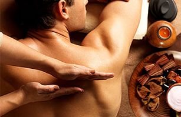

-
理疗知识
KNOWLEDGE

-


征集令：重金悬赏《重庆鑫荣和单店运营模式》
发布时间:2016-08-18
中医讲究穴位养生，通过按摩刺激穴位，疏通人体经络而达到祛病强身的作用。常按 这10大穴位，可以疏通全身经络，缓解腰肩酸痛、浑身疼痛、失眠等多种病症。赶紧 赶紧跟着小编一起试试吧。征集令：重金悬赏《重庆鑫荣和单店运营模式》
发布时间:2016-08-18
中医讲究穴位养生，通过按摩刺激穴位，疏通人体经络而达到祛病强身的作用。常按 这10大穴位，可以疏通全身经络，缓解腰肩酸痛、浑身疼痛、失眠等多种病症。赶紧 赶紧跟着小编一起试试吧。征集令：重金悬赏《重庆鑫荣和单店运营模式》
发布时间:2016-08-18
中医讲究穴位养生，通过按摩刺激穴位，疏通人体经络而达到祛病强身的作用。常按 这10大穴位，可以疏通全身经络，缓解腰肩酸痛、浑身疼痛、失眠等多种病症。赶紧 赶紧跟着小编一起试试吧。